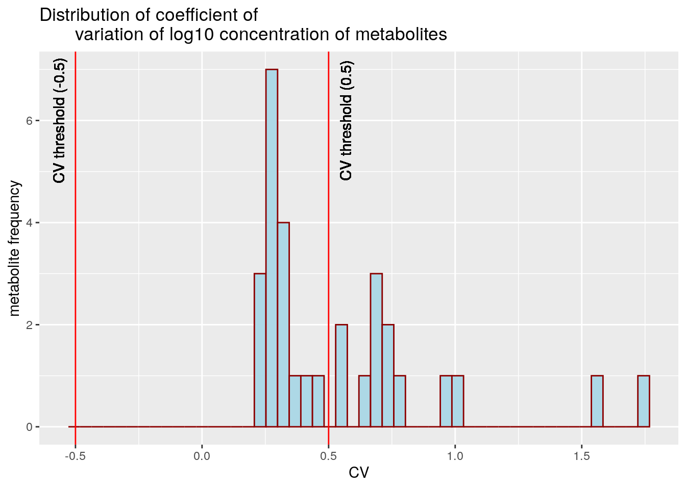
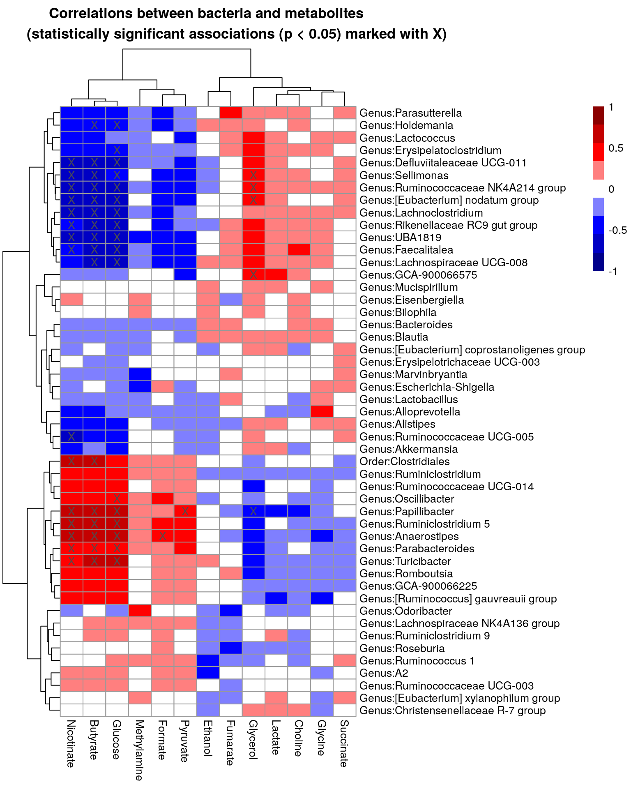

Chapter 7 Unsupervised learning
7.1 Biclustering
Exploring metabolomic data:
library(ggplot2)
# Threshold: metabolites whose (cv > +threshold or cv < -threshold), will be included
cv_threshold <- 0.5
metabolite_trans <- "nmr"
# Get the data
metabolite_tse <- mae[[2]]
# Calculate coeffieicnt of variation of individual metabolites
df <- data.frame(cv = apply(assay(metabolite_tse, metabolite_trans), 1,
function(x){sd(x)/mean(x)}))
# Plot them as a histogram, and show a line that is used as a threshold
plot <- ggplot(df, aes(x = cv)) +
geom_histogram(bins = 50, color="darkred", fill="lightblue") +
labs(x = "CV", y = "metabolite frequency",
title = "Distribution of coefficient of
variation of log10 concentration of metabolites") +
geom_vline(xintercept = cv_threshold, color = "red") +
geom_text(aes(cv_threshold, 6, label =
paste0("CV threshold (", cv_threshold, ")"), vjust = 2, angle=90)) +
geom_vline(xintercept = -cv_threshold, color = "red") +
geom_text(aes(-cv_threshold, 6, label =
paste0("CV threshold (", -cv_threshold, ")"), vjust = -1, angle=90))
plot
Subsetting metabolomic data:
# Get those metabolites that are over threshold
metabolites_over_th <- rownames(df[df$cv > cv_threshold |
df$cv < -cv_threshold, , drop = FALSE])
# Ignore those metabolites that do not have name / are NA
metabolites_over_th <- metabolites_over_th[!str_detect(metabolites_over_th, "NA")]Preprocessing microbiome and metabolomic data:
rank <- "Genus"
prevalence <- 0.2
detection <- 0.001
taxa_trans <- "rclr"
# Get bacterial data
taxa_tse <- mae[[1]]
# Agglomerate at Genus level
taxa_tse <- agglomerateByRank(taxa_tse, rank = rank)
# Do CLR transformation
taxa_tse <- transformSamples(taxa_tse, method = "rclr", pseudocount = 1)
# Subset metabolite data
metabolite_tse <- metabolite_tse[metabolites_over_th, ]
# Subset bacterial data by its prevalence. Bacteria whose prevalences are over
# threshold are included
taxa_tse <- subsetByPrevalentTaxa(taxa_tse,
prevalence = prevalence,
detection = detection)
# Remove uncultured and ambiguous(as it's hard to interpret their results)
taxa_tse <- taxa_tse[-grep("uncultured|Ambiguous_taxa", names(taxa_tse)),]Cross-correlation of both data and visualization:
library(pheatmap)
# Define data sets to cross-correlate
x <- t(assay(taxa_tse, taxa_trans))
y <- t(assay(metabolite_tse, "nmr"))
# If there are duplicated taxa names, makes them unique
colnames(x) <- str_remove(colnames(x), paste0(rank, ":"))
colnames(x) <- make.unique(colnames(x))
# Cross correlate data sets
correlations <- microbiome::associate(x, y, method = "spearman", mode = "matrix")
# For plotting purpose, convert p-values, under 0.05 are marked with "X"
p_threshold <- 0.01
p_values <- ifelse(correlations$p.adj<p_threshold, "X", "")
# Scale colors
breaks <- seq(-ceiling(max(abs(correlations$cor))), ceiling(max(abs(correlations$cor))),
length.out = ifelse( max(abs(correlations$cor))>5,
2*ceiling(max(abs(correlations$cor))), 10 ) )
colors <- colorRampPalette(c("darkblue", "blue", "white",
"red", "darkred"))(length(breaks)-1)
# Create a heatmap
pheatmap(correlations$cor, display_numbers = p_values,
main = paste0("Correlations between bacteria and metabolites
(statistically significant associations (p < 0.05) marked with X)"),
fontsize = 10,
breaks = breaks,
color = colors,
fontsize_number = 20)